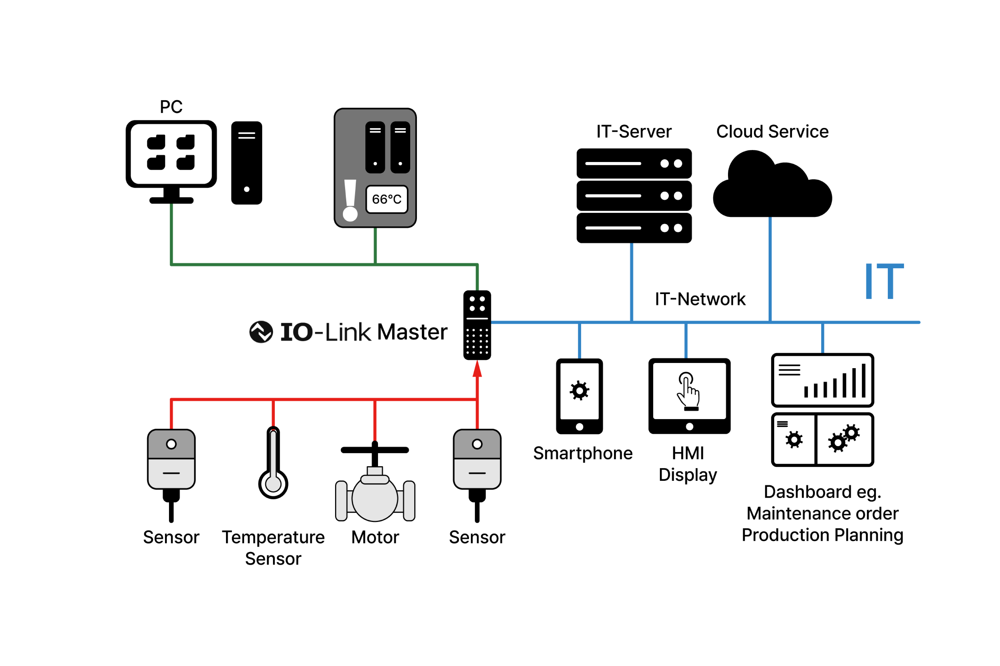

Industry 5.0 시대의 KAIS는 왜 SCADA 플랫폼을 만드는가
산업은 끊임없이 진화해왔습니다.
기계화와 전력, 전자와 IT를 거쳐 지금은 '데이터와 연결'의 시대,
그리고 이제는 사람 중심의 기술, Industry 5.0으로 접어들고 있습니다.
그 변화의 흐름 속에서 KAIS는 한 가지 중요한 질문을 던졌습니다.
“우리는 단지 센서를 파는 회사인가?”
“아니면, 산업의 미래를 연결하는 플랫폼을 만드는 회사인가?”
산업의 진화, 그 다섯 번째 변화
- Industry 1.0: 증기기관, 기계화
- Industry 2.0: 전기와 조립라인, 대량생산
- Industry 3.0: 전자 제어와 IT 기반 자동화
- Industry 4.0: IoT, 빅데이터, AI를 활용한 스마트 제조
- Industry 5.0:
🔹 사람 중심(People-centricity)
🔹 지속 가능성(Sustainability)
🔹 회복 탄력성(Resilience)
이제 산업은 기술이 아닌 사람을 위한 시스템을 지향합니다.
데이터가 사람을 이해하고, 사람의 의사결정을 도와야 하는 시대가 도래한 것입니다.
Automation Pyramid, 그 중심에 서는 기술
- 센서와 액추에이터가 데이터를 수집하는 Field
- 제어기(PLC)가 실시간으로 동작을 조절하는 Control
- 전체 설비의 상태를 시각화하고 판단하는 Supervisory (SCADA)
- 기업 전략으로 연결하는 Planning (MES/ERP)
우리는 이 피라미드의 중심부, SCADA에 주목했습니다.
왜냐하면 이 지점이 바로 "사람의 판단과 개입"이 이뤄지는 계층이기 때문입니다.
우리가 센서를 넘어 SCADA를 만드는 이유

KAIS는 다양한 산업현장에 수많은 센서를 공급해왔습니다.
하지만 이제, 우리는 그 데이터를 “보이게” 만들고자 합니다.
- 센서의 상태, 측정값, 온도, 진단정보를 실시간으로 수집
- 이를 웹 기반 소프트웨어로 시각화
- 사람이 즉시 이해하고 대응할 수 있는 정보로 재구성
우리는 단지 데이터를 모으는 것이 아니라,
데이터가 인간의 판단으로 연결되는 구조를 설계합니다.
IO-Link, Industry 5.0의 기술적 기반
그 중심에는 IO-link가 있습니다.
IO-Link는 IEC 61131-9 기반의 디지털 통신 프로토콜로, 센서와 단순한 측정기가 아닌,
진단, 설정, 상태 모니터링이 가능한 지능형 디바이스로 진화하게 만들어줍니다.
- 양방향 통신으로 센서의 상태와 정보를 확인
- 실시간 설비 상태 시각화 및 분석
- 클라우드 또는 서버에서 통계 분석과 이상 진단
- 설비 시스템에 피드백하여 자동 보정 및 유지보수 지원
이것이 우리가 말하는 스마트 센서 솔루션의 본질입니다.
KAIS가 지향하는 솔루션 기업의 길
우리는 이제 제품이 아닌 소프트웨어를 만드는 회사입니다.
- 센서를 납품하는 것이 아니라
- 데이터를 연결하고
- 의사결정을 도와주며
- 스마트한 설비 운영이 가능한 플랫폼을 제공
기술이 사람을 대체하는 것이 아니라, 사람을 이해하고 돕는 도구가 되기를 바랍니다.
SCADA는 그 출발점이며, KAIS는 그 중심에서 산업의 구조를 바꾸고자 합니다.
마무리 문구 (선택 후보)
우리는 센서를 만들지 않습니다. 하지만 현장을 누구보다 깊이 이해하고, 그 현장에 가장 적합한 센서를 찾아 제안하고 연결합니다.
그리고 이제는, 그 데이터를 시각화하고, 해석하며, 의미로 전환하는 솔루션을 설계합니다.
Industry 5.0 시대, KAIS는 기술과 사람을 잇는 ‘소프트웨어 기반의 파트너’가 되고자 합니다.
우리는 센서를 만드는 대신,
고객의 공정에 가장 적합한 센서를 찾아 연결하고, 그 위에
데이터가 보이고, 흐르고, 판단되는 구조를 설계합니다.
단순한 공급을 넘어,
현장과 사람 사이를 잇는 솔루션 설계 파트너로 성장하고 있습니다.
우리가 유통하는 것은 단지 센서가 아닙니다.
현장의 언어를 이해하고, 데이터를 흐르게 하는 구조입니다.
그리고 이제,
그 모든 흐름이
사람을 위한 기술로 연결되기를 바랍니다.